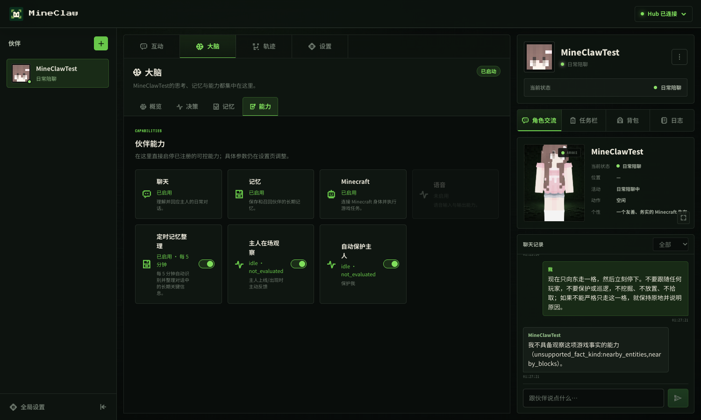
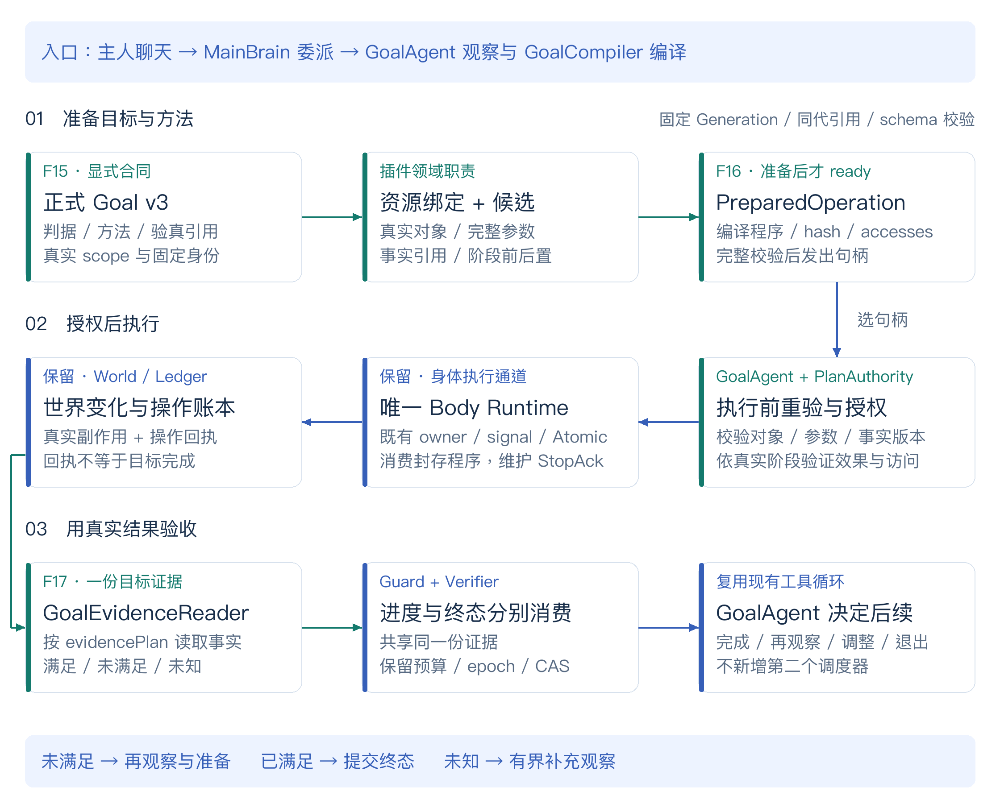

← 返回作品集持续开发 · 2026MineClawMineClaw 是 Minecraft Java 版里的 AI 伙伴，能对话，也能在同一个世界里执行玩家交代的目标。对话可以马上回复，采集却需要排队、执行和验收。主脑提交目标后，任务系统在游戏世界里推进它，背包或位置的变化决定目标是否达成。游戏伙伴的目标执行与验收调度主脑提交玩家目标GoalQueue逐个调度GoalAgent组织执行计划执行游戏技能操作 Minecraft世界观测位置、方块、背包结果判定完成或再次观察放大查看 ↗客户端实拍 · MineClawTest 的伙伴能力客户端保留伙伴能力与调用轨迹。正文区分了历史会话录像和真实进服时的状态留档。目标编排与世界状态验收对话、能力与事件轨迹模型调用的缓存表现目标编排与世界状态验收主脑提交目标，GoalQueue 逐个交给 GoalAgent。GoalAgent 通过计划编排器推进步骤；失败时根据原因和重试次数决定恢复，达到上限后交回主脑请求协助。例如「取木头」要落到世界里的具体动作。位置和附近方块限定行动对象，动作回执说明执行经过，背包变化才能说明木头是否真正入袋。放大查看 ↗目标执行框架 · 点击图片可放大查看。放大查看 ↗结果验真 · 动作返回后，用世界状态核对结果。对话、能力与事件轨迹客户端如何呈现两种状态互动页呈现当前伙伴、游戏预览和对话；轨迹页按回合聚合模型与工具调用。留档的会话包含 37 个回合、190 次调用，单个事件仍可追溯。放大查看 ↗互动 · 选择伙伴并查看角色交流。放大查看 ↗轨迹 · 此次打开的历史会话有 37 个回合、190 次调用。能力与轨迹视图的运行留档这段约 10 秒的录像记录了 MineClawTest 的能力面板与历史调用轨迹。录制时伙伴尚未进服，运行时坐标与生命值来自本章另一份进服留档。客户端操作实录 · 伙伴能力与历史调用调用事件和进服记录下面两张工作区留档记录了不同的时刻。LanYi 的截图选中了一个调用事件，MineClawTest 的截图则显示了伙伴进服后的坐标和生命值。运行游戏行动需要配置 Minecraft Java 版服务器与模型接口。放大查看 ↗LanYi · 一次调用如何对应到具体事件。放大查看 ↗MineClawTest · 进服状态留档。模型调用的缓存表现2026 年 10 月 19 日至 11 月 6 日，工作区记录了 190 次 DeepSeek 调用。647,940 个可缓存输入 token 中，有 476,156 个命中缓存，合计 73.5%。主脑的 19 对相邻请求使用了相同工具，其中 8 对最早在「最近对话记录」处分叉。较早的消息一旦被改写，后续相同的内容也难以复用。待验证的优化是保留原始对话和工具结果，将本轮游戏状态与新问题追加在末尾。重放同一段追问，比较每个成功任务的未命中 token，同时核对回答里的最新进度。按调用方统计 · deepseek-v4-flash调用方调用次数输入命中率未命中 token主脑3442.7%72,271任务执行4280.2%66,223记忆整理11482.2%33,290项目链接查看源码与启动说明 ↗目标执行框架 · SVG 原图 ↗结果验真 · SVG 原图 ↗客户端实录 · MP4 ↗DeepSeek 前缀缓存说明 ↗
 放大查看 ↗放大查看 ↗
放大查看 ↗放大查看 ↗